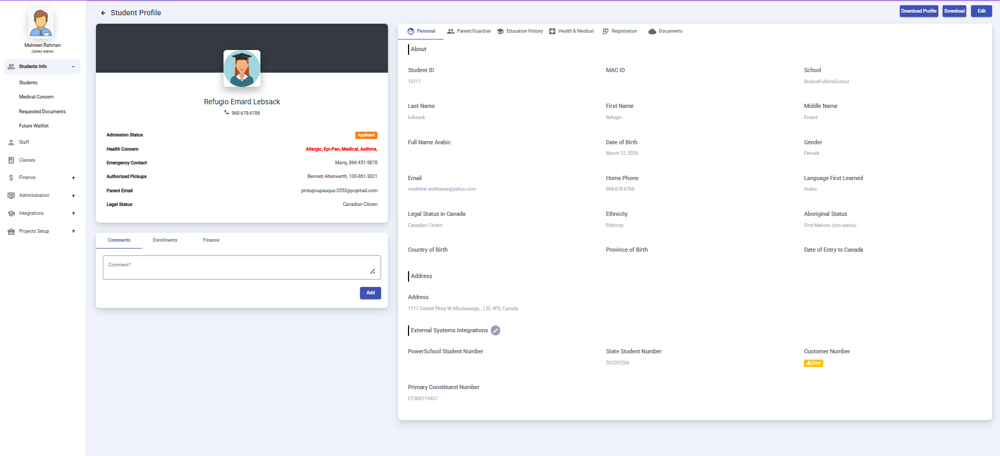

Applicants
Manage student applicants and their applications.
The Applicants section is the main starting point for managing incoming student registrations. From this dashboard, administrators can view new applications, check payment details, process data, and move students smoothly through the various stages of admission.
How do I access the Applicants section?
To open the applicants dashboard, follow these quick steps in the sidebar:
- Open the Students Info menu.
- Click on Students to open the main student management panel.
- Select the Applicants tab at the top of the student list.
How do I manage student lifecycles across the panel tabs?
The student management panel features multiple tabs that represent different stages of the enrollment workflow. You will start on the Applicants tab to review new submissions, and then move students to other individual tabs as their status changes:
- Applicants: The primary queue for reviewing and processing newly submitted applications.
- Waiting List: Holds approved or qualified applicants who are waiting for available space in a class.
- Requested to Resubmit: Tracks applications that need more documents or corrections from the family.
- Ready to Enroll: Contains candidates who have cleared initial checks and are ready for official enrollment.
- Enrolled: Tracks students who have moved into the active enrollment phase.
- Registered: Shows students who have completed all official registration steps in the system.
- Incomplete: Holds application files that are missing crucial starting details or information.
- Withdrawn: Archives files for applications that have been officially closed because the family withdrew.
How do I navigate the dashboard and use table controls?
- Switching Schools: Use the School Selector Dropdown in the top-right corner (next to your admin profile button) to switch between different schools easily from a single login.
- Executing Bulk Actions: Use the Select Action Dropdown at the top-left of the table to update multiple selected student records at the same time.
- Reading Table Columns: The main directory gives you a clear look at key applicant details:
- Student ID: Click this to open the full student profile view.
- Name & Demographics: Shows the student's name, gender, email, and age.
- Application Details: Shows the date they applied and their applied grade.
- Payment Status: Indicates their financial standing, such as Paid or Refunded.
- Step Column: Shows the exact workflow step requiring attention (e.g., Step 0 or Step 4). This column is visible in both the Requested to resubmit and Incomplete tabs.
How do I handle document requests and withdrawals?
- Requesting Document Resubmissions:
- Open the student's profile and go to the Documents tab.
- Click the Request Document(s) button in the top right to open the modal.
- Choose the missing files the applicant needs to provide.
- [In Progress: Clarifying the exact system action or workflow trigger required to route an application into the "Requested to resubmit" tab view.]
- Handling Withdrawals: Setting a student's status to withdrawn officially closes and archives the application, requiring no further operational actions aside from saving records.
What information is available inside the Student Profile?
When you click a student's ID, a detailed profile opens up. It is organized into six tabs to help you review every part of their application clearly and comfortably:

Figure: Student Profile view displaying personal details and navigation tabs.
Personal Tab
This tab contains the student's core background information, contact details, home address, and Canadian legal status. It also houses External Systems Integrations tracking numbers—such as PowerSchool numbers, State student numbers, customer numbers, and primary constituent numbers (like CT-000115427). At the bottom of the page, a comment box lets you log internal notes for your team.
Parent/Guardian Tab
Here, you can view all primary contact information for the student's parents or guardians, including their email addresses and emergency contact numbers linked to the family.
Education History Tab
This section outlines the student's background prior to applying, including their previous school name, previous grade, school address, Individual Education Program (IEP) status, and any history of suspensions or expulsions.
Health & Medical Tab
This tab tracks important health and safety details. It covers physical conditions, allergies, Epi-Pen requirements, dietary restrictions, continuous medications, asthma information, immunization records, medical disclosures, and any behavioral or cognitive notes.
Registration Tab
Here, you can review the specific program type requested and semester details, alongside any comments left by parents. It also includes a chronological Logs audit trail that tracks important milestones, such as the exact timestamp when the application was first submitted.
Documents Tab
This acts as the central storage space for all files uploaded by the applicant. It holds birth or immigration certificates, health cards, report cards, photos, custody papers, void cheques, medical forms, immunization records, financial and parental agreements, and OTSLP documents. You can also use the Request Document(s) function directly from this view.